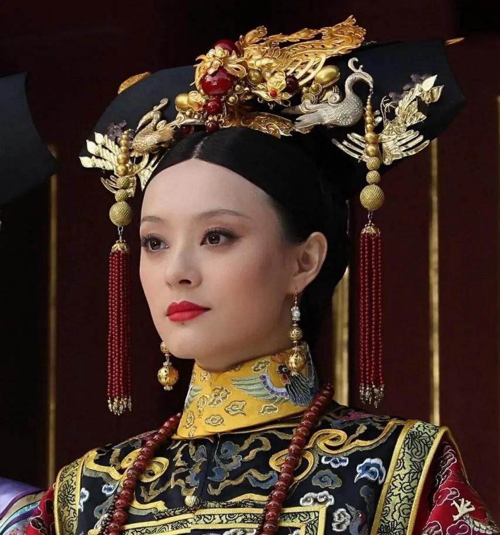
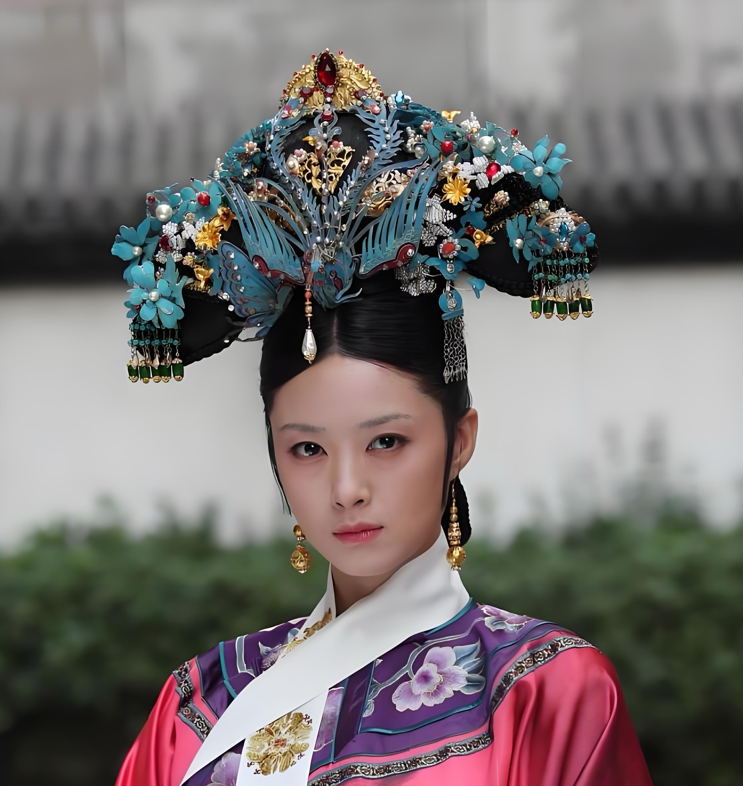

角色介绍

甄嬛
饰演：孙俪
本剧女主角，从一个天真烂漫的少女成长为善于权谋的皇太后。她聪明睿智，善良正直，在宫廷斗争中始终保持本心。

华妃
饰演：蒋欣
皇上的宠妃，性格张扬跋扈，手段狠辣。她深爱皇上，却因嫉妒和权力欲而走向悲剧。

皇上
饰演：陈建斌
清朝雍正皇帝，性格多疑，城府极深。他深爱甄嬛，却又不得不权衡各方势力。

皇后
饰演：蔡少芬
皇上的正宫皇后，表面温婉贤淑，实则心机深沉。她与华妃明争暗斗，是甄嬛在宫中的主要对手之一。